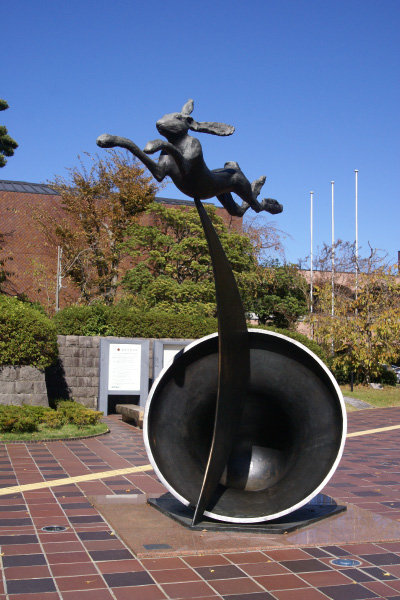
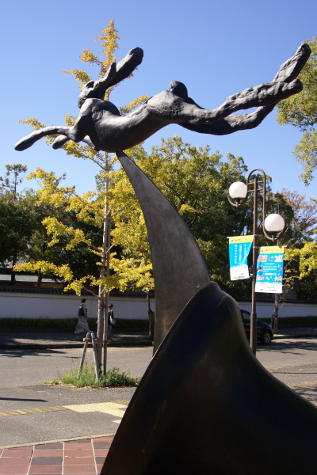
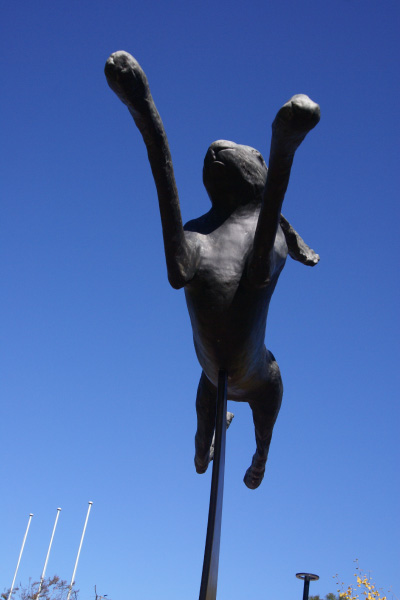

バリー・フラナガン
  
作者のバリー・フラナガンはウェールズ出身のイギリスの彫刻家。人間像の代わりに野うさぎを使い、人
間の行動を作品の中に投影した《野うさぎ》シリーズがある。その内の二作品が、福岡市美 術館にある
『三日月と鐘の上の跳ぶ野うさぎ』と、早良区ふれあい橋にある《ミラー・ニジンスキー》である。タイ
トルの通り、鐘と三日月の上を野うさぎが跳んでいる形をしている。鐘の上の野うさぎは三日月と接合し
ているように思えるが、これは突き刺さっている状態で、野うさぎの部分は取り外しが可能になっている。